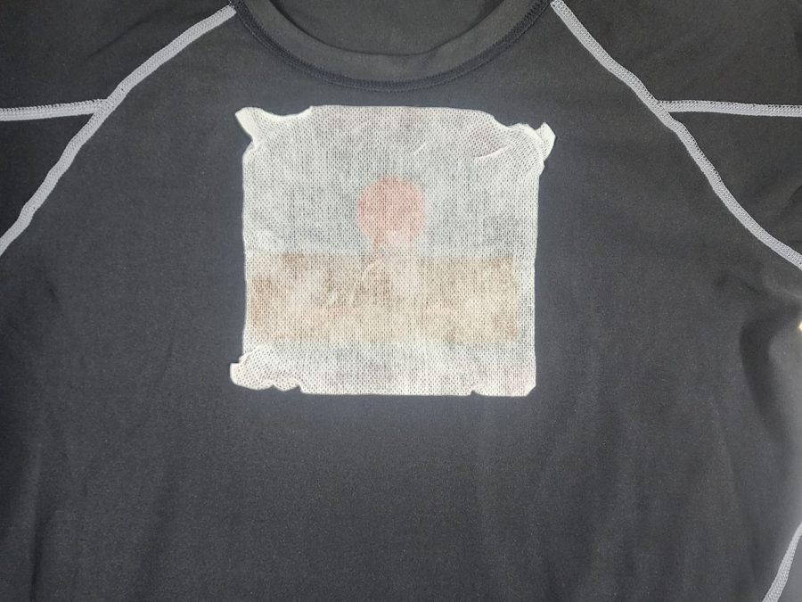

Wireless RFID E-Textile Breathing Sensor
First-class markA tag stuck to a shirt that reads breathing with no battery, because the reader's radio signal powers it. I designed its sensor, a capaciflector, and its antenna. The chip's datasheet only described simple two-plate sensors, so I worked out how to drive a three-electrode sensor from a single pin. It picked up clear breathing from a metre away.
Read more
The brief was continuous breathing monitoring for patients outside intensive care, with nothing on the patient that needs a battery. Our team of five built a passive RFID tag that sticks to clothing. I led two parts of it, the sensor (a capaciflector) and the antenna, from the first simulations to the finished tags.
The first puzzle was the chip. It had a single sensing pin, and its datasheet only covered simple two-plate capacitors, but a capaciflector has three electrodes. Working from first principles, I routed the ground plane to the sensing pin so the chip drove both the reflector and the sensor electrode, and that went into the final design. I simulated the sensing principle in Multisim, and designed and simulated the antenna in ANSYS HFSS, including the effect of the wearer's body.
Then fabrication failed, twice. Our screen-printed sensors shorted because of air bubbles in the dielectric, in week 7 and again in week 8. On my supervisor's advice I switched to Kapton–copper clad and made it work reliably. I designed ten flexible-PCB layouts in KiCad, chose the four most promising to manufacture, fixed their manufacturing-rule errors and assembled the tags by hand. Testing raised two more problems. Long wires made the data noisy, and a more compact version lost read range because the sensor coupled to the antenna. A smaller sensor geometry fixed both.
In the end it read breathing clearly from a metre away. With breathing paced at 6 per minute by a metronome, we tested from 80 to 160 cm. The pattern was clear up to 100 cm, still recognisable at 120 cm and weaker beyond. 100 cm was the best balance between patient comfort and signal, with an average peak-to-peak swing of 75 raw counts. The reader picked up several tags at once, each with its own ID, so one reader could in principle watch a whole ward. We only had one working breathing sensor, though, so readings from several patients at once are still untested.
If I did it again, I'd test the fabrication route in week 1, not week 7.
